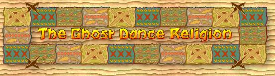

|
Bibliography |
| "Imaging and Imaging
the Ghost Dance: James Monney's Illustrations and Photographs 1891-1893" (Oct.
30, 2002) <http://php.indiana.edu/~tkavanag/visual5.html> |
| "Autumn Leaves:
The Ghost Dance" Sondra Bell, Winter 1996 (Nov. 4, 2002) <http://www.sondra.net/al/vol3/32ghostdance.html> |
| "Ghost Dance Religion"
Lori Liggett, Summer 1998 (Nov. 4, 2002) <http://www.bgsu.edu/departments/acs/1890s/woundedknee/WKghost.html> |
| "The Native American
Ghost Dance" Bobbi Jo Innamorato Williams (Nov. 16, 2002) <http://njnj.essortment.com/nativeamerican_rmqk.html> |
| "Wounded Knee
Site Index" (Nov. 7, 2002) <http://www.dickshovel.com/WKmasscre.html>
|
| "The Indian Craze"
A.J. Morris, Nov. 15, 1890 (Nov. 6, 2002) <http://www.ajmorris.com/a06/GhostDance.html> |
| "Ghost Dance Songs"
1998 (Nov. 8, 2002) <http://msnbc.com/onair/msnbc/timeandAgain/archive/wknee/ghostsongs.asp?cp1=1> |
| "Masscre at Wounded
Knee" (Nov. 8, 2002) <www.historytelevision.ca> |
| "Ghost Dance"
Karen M. Strom 1995 (Nov. 10, 2002)<http://www.hanksville.org/daniel/lakota/Ghost_Dance.html> |
| Rossville Jr.
High T.J. McCullough Nov. 22, 2002 Back to HomePage |